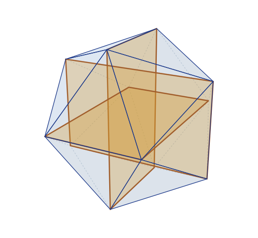
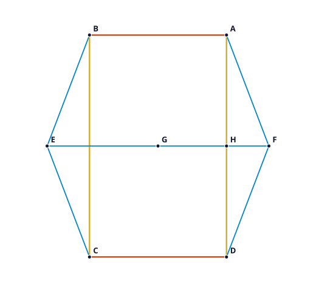

Golden Rectangles of the Icosahedron¶
Three Mutually Orthogonal Planes, Exact Circumquadrance, and the Keplerian Meridian
Icosaedron intra sphaeram constituere, et comprehendere sphaerae superficie, sicut priora corpora: ostendere etiam quod icosaedri latus irrationalis est linea quae minor vocatur.
To construct an icosahedron within a sphere, and comprehend it by the surface of the sphere, like the preceding bodies; and to show that the side of the icosahedron is the irrational line called minor.
—Euclid of Alexandria, Elements Book XIII, Proposition 16
Interactive 3D Codex¶
The interactive 3D model below displays the canonical regular icosahedron intersected by the three mutually perpendicular golden rectangles spanning its twelve vertices:
Three Orthogonal Golden Rectangles¶
In Cartesian 3-space, the twelve vertices of the regular icosahedron can be partitioned into three congruent, mutually orthogonal rectangles whose center is the origin \((0, 0, 0)\):
where \(\phi = \frac{1 + \sqrt{5}}{2}\) satisfies \(\phi^2 = \phi + 1\).

The three mutually perpendicular golden rectangles :math:`R_{YZ}`, :math:`R_{ZX}`, and :math:`R_{XY}` spanning the twelve vertices of the regular icosahedron.¶
Pairwise Orthogonality of Normal Vectors¶
The normal vectors to the planes of these three rectangles are the coordinate unit vectors:
Their mutual dot products vanish identically:
Thus, the three planes are pairwise perpendicular, meeting along the three coordinate axes.
Exact Metric Proportions and Circumquadrance¶
Consider the rectangle \(R_{YZ}\) in the plane \(X = 0\):
Short Edge: Joining \((0, 1, \phi)\) and \((0, -1, \phi)\):
\[Q_{\text{short}} = (0 - 0)^2 + (-1 - 1)^2 + (\phi - \phi)^2 = (-2)^2 = 4\]The length of the short edge is \(\sqrt{4} = 2\). Each of the three rectangles contributes two short edges, accounting for \(3 \times 2 = 6\) edges of the twenty-face icosahedron.
Long Edge: Joining \((0, 1, \phi)\) and \((0, 1, -\phi)\):
\[Q_{\text{long}} = (0 - 0)^2 + (1 - 1)^2 + (-\phi - \phi)^2 = (-2\phi)^2 = 4\phi^2 = 4(\phi + 1)\]The length of the long edge is \(2\phi\). These long edges do not lie on the surface of the icosahedron, but form interior chords passing through the interior.
Aspect Ratio: The quadrance ratio between the edges is:
\[\frac{Q_{\text{long}}}{Q_{\text{short}}} = \frac{4\phi^2}{4} = \phi^2 = \phi + 1\]Taking square roots confirms the classical golden aspect ratio \(\frac{\text{long}}{\text{short}} = \phi : 1\).
Diagonal Quadrance: By the Pythagorean theorem in the rectangle:
\[Q_{\text{diag}} = Q_{\text{short}} + Q_{\text{long}} = 4 + 4\phi^2 = 4(1 + \phi + 1) = 4(\phi + 2)\]Circumquadrance: Since the rectangle is centered at the origin, each diagonal connects antipodal vertices \(V\) and \(-V\). The circumradius is half the diagonal, so its quadrance is:
\[Q_{\text{out}} = \frac{Q_{\text{diag}}}{4} = \phi + 2 = \frac{5 + \sqrt{5}}{2}\]
The Principal Meridian Hexagon¶
When the regular icosahedron is sliced along the principal symmetry plane \(X = 0\), the cross-section reveals both the golden rectangle \(R_{YZ}\) and the equatorial crossings of the remaining icosahedron edges.

The 2D principal meridian section (:math:`X = 0`) showing the :math:`2 times 2phi` golden rectangle :math:`ABCD`, the equatorial axis :math:`EF`, and the golden meridian hexagon.¶
Kepler–Pacioli Meridian Construction¶
In the \((Y, Z)\) coordinate plane:
Vertices of :math:`R_{YZ}`: \(A = (1, \phi)\), \(B = (-1, \phi)\), \(C = (-1, -\phi)\), \(D = (1, -\phi)\).
Equatorial Crossings: The four icosahedral edges connecting \(R_{ZX}\) and \(R_{XY}\) intersect the plane \(X = 0\) at the two equatorial points \(E = (-\phi, 0)\) and \(F = (\phi, 0)\).
Meridian Hexagon: Connecting the cyclic sequence \(A \to B \to E \to C \to D \to F \to A\) forms a symmetric equiangular hexagon whose diagonals and axes divide one another in extreme and mean ratio.
Equatorial Golden Division¶
Let \(O = (0, 0)\) be the center of the icosahedron, and \(H = (1, 0)\) be the midpoint of the vertical side \(AD\):
Quadrance from center to equatorial vertex \(F\):
\[Q(O, F) = \phi^2 = \phi + 1\]Quadrance from center to chord midpoint \(H\):
\[Q(O, H) = 1^2 = 1\]Quadrance from chord midpoint to equatorial vertex \(F\):
\[Q(H, F) = (\phi - 1)^2 = \phi^{-2} = 2 - \phi\]The resulting quadrance ratios certify the divine proportion:
\[\frac{Q(O, F)}{Q(O, H)} = \frac{\phi^2}{1} = \phi^2, \quad \frac{Q(O, H)}{Q(H, F)} = \frac{1}{\phi^{-2}} = \phi^2\]
Thus, the vertical side of the golden rectangle divides the equatorial radius \(OF\) in exact extreme and mean ratio.